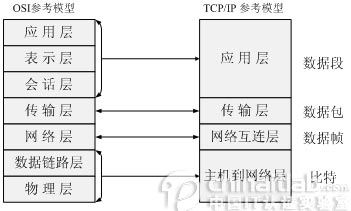
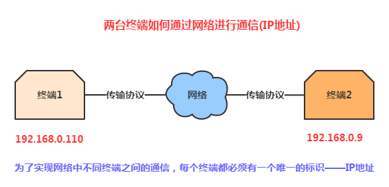
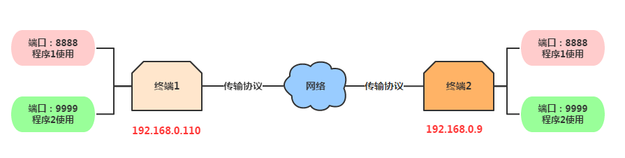
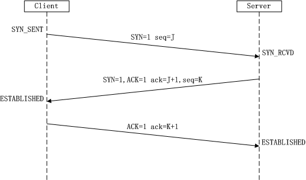
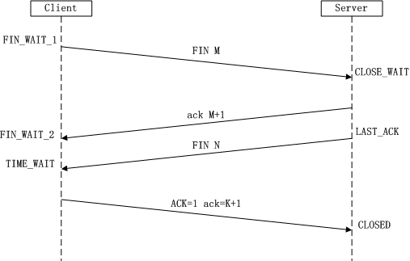
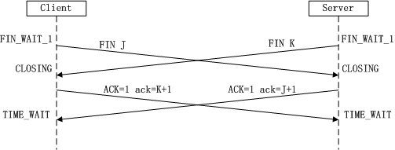
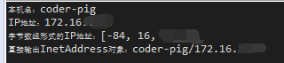

本節の導入：
Java Socketを学んだことのない初心者に配慮し、あるいはAndroid開発に関わるネットワークプロトコル関連の概念を整理するためです。何せ面接のとき、面接官に『ネットワークプロトコルは何層ある？IPプロトコルはどの層？Socketは一体何だ？何種類に分かれる？TCPとUDPプロトコルはどの層？違いは何？...』と聞かれることもありますからね。うん、これ...だから、この節の概念的な理論を学ぶことはとても必要なのです！では、余談はさておき、本節の内容を始めましょう～
1. OSI七層ネットワークモデル簡易分析
もちろん、私たちはネットワーク工学の専門家ではないので、どのような層があるか、ざっくり何に使うのかを知っていれば十分です！
OSI七層ネットワークモデル（下から上へ）：
- 物理層（Physical）：機器間のデータ通信に伝送媒体と相互接続機器を提供し、データ伝送に信頼できる環境を提供します。ネットワーク伝送の物理メディア部分と理解できます。例えばネットワークカード、ネットワークケーブル、ハブ、リピータ、モデムなどです！この層では、データはまだ整理されておらず、生のビットストリームまたは電気電圧として扱われます。この層の単位は：bit（ビット）
- データリンク層（Datalink）：データチャネルと理解できます。主な機能は、信頼性の低い物理回線上でデータを確実に伝送する方法です。この層の役割には、物理アドレス指定、データのフレーミング、フロー制御、データ誤り検出、再送などが含まれます！また、このデータリンクとは：物理層は端末機器間のデータ通信のために伝送媒体とその接続を提供します。媒体は長期的であり、接続には生存期間があります。接続の生存期間中、送受信両端は不等な一回または複数回のデータ通信を行うことができます。毎回の通信は通信連絡の確立と通信連絡の解除という2つのプロセスを経る必要があります！この確立されたデータ送受信関係～ この層のデバイスには：ネットワークカード、ブリッジ、ネットワークスイッチ、またこの層の単位は：帧
- ネットワーク層（Network）：主な機能は、ネットワークアドレスを対応する物理アドレスに変換し、データを送信側から受信側にルーティングする方法を決定することです。いわゆるルーティングと経路探索：1つの端末が複数の端末と通信する必要がある場合、任意の2つの端末機器のデータリンクを確立するという問題が発生します！簡単に言うと、ネットワーク接続を確立し、上位層にサービスを提供することです！この層のデバイスには：ルーター！この層の単位は：データパケット、またIPプロトコルはこの層にあります！
- トランスポート層（Transport）：上位のアプリケーション層に通信サービスを提供し、通信部分に面した最上位層であり、同時にユーザー機能の最下位層です。セッション層のデータを受け取り、必要に応じてデータを分割し、これらのデータをネットワーク層に渡し、これらのデータセグメントが確実に対向端末に届くことを保証します！したがって、この層の単位は：データセグメント；そしてこの層には非常に重要な2つのプロトコルがあります：TCP（伝送制御プロトコル）与UDP（ユーザーデータグラムプロトコル）、これもこの節の核心的な説明部分です！
- セッション層（Session）：ネットワーク内の2つのノード間で通信を確立、維持、終了する役割を担います。通信リンクを確立し、セッション中の通信リンクを円滑に保ち、2つのノード間の対話を同期させ、通信を中断するかどうかを決定し、通信が中断された場合にどこから再送信するかを決定します。つまり、異なるマシン上のユーザー間のセッションの確立と管理です！
- プレゼンテーション層（Presentation）：アプリケーション層からのコマンドとデータを解釈し、さまざまな構文に相応の意味を与え、一定の形式に従ってセッション層に伝送します。その主な機能は「ユーザー情報の表現問題を処理すること、例えばエンコーディング、データ形式変換、暗号化・復号化、圧縮・解凍」などです。
- アプリケーション層（Application）：OSI参照モデルの最上位層であり、ユーザーのアプリケーションにネットワークサービスを提供します。他の6層の働きに基づいて、ネットワーク内のアプリケーションとネットワークOSとの間の連絡を実現し、利用者間の接続の確立と終了を行い、ネットワークユーザーが要求するさまざまなネットワークサービスおよびアプリケーションに必要な監視、管理、サービスなどの各種プロトコルを実行します。さらに、この層は各アプリケーション間の調整も担当します。アプリケーション層がユーザーに提供するサービスとプロトコルには、ファイルサービス、ディレクトリサービス、ファイル転送サービス（FTP）、リモートログインサービス（Telnet）、電子メールサービス（E-mail）、プリントサービス、セキュリティサービス、ネットワーク管理サービス、データベースサービスなどがあります。
さて、上でOSI七層ネットワークモデルを簡単に述べましたので、以下にまとめましょう：
OSIは理想的なモデルであり、一般的なネットワークシステムはそのうちのいくつかの層だけに関与します。七層モデルでは、各層が特別なネットワーク機能を提供します。ネットワーク機能の観点から見ると：
- 下位4層（物理層、データリンク層、ネットワーク層、トランスポート層）は主にデータ伝送と交換機能を提供し、すなわちノード間の通信が中心です。
- 第4層は上下2つの部分の橋渡しとして、ネットワーク全体のアーキテクチャにおいて最も重要な部分です；
- 上位3層（セッション層、プレゼンテーション層、アプリケーション層）は、ユーザーとアプリケーション間の情報およびデータ処理機能の提供を主とします。
簡単に言えば、下位4層は主に通信サブネットワークの機能を実現し、上位3層は主にリソースサブネットワークの機能を実現します。
——以上の内容は以下を参照しています：OSI七層モデル詳細解説
2. TCP/IP四層モデル

TCP/IPは一連のプロトコルの総称であり、多くのプロトコルを含み、TCP/IPプロトコルスイートを構成しています。TCP/IPプロトコルスイートは4層に分かれており、IPはプロトコルスイートの第2層（OSIの第3層に相当）、TCPはプロトコルスイートの第3層（OSIの第4層に相当）に位置します。TCP/IP通信プロトコルは4層の階層構造を採用しており、各層はその下の層が提供するネットワークを呼び出して自身の要求を満たします。この4層はそれぞれ：
- アプリケーション層：アプリケーション間で通信する層です。例えば、簡易メール転送（SMTP）、ファイル転送プロトコル（FTP）、ネットワークリモートアクセスプロトコル（Telnet）などがあります。
- トランスポート層：この層では、ノード間のデータ転送サービスを提供します。例えば、伝送制御プロトコル（TCP）、ユーザーデータグラムプロトコル（UDP）などです。TCPとUDPはデータパケットに転送データを追加し、それを次の層に転送します。この層はデータの転送を担当し、データが確実に届いて受信されたことを確認します。
- インターネット層：基本的なデータパケット転送機能を提供し、各データパケットが目的のホストに到達できるようにします（ただし、正しく受信されたかは確認しません）。例えば、インターネットプロトコル（IP）です。
- ネットワークインターフェース層：実際のネットワークメディアの管理を行い、実際のネットワーク（Ethernet、Serial Lineなど）を使用してデータを転送する方法を定義します。
3. TCP/UDPの違いの解説
さて、前の2点は大まかに説明しましたが、OSI七層モデルとTCP/IP四層モデルの概念を皆さんに紹介しただけです。次に話すのは、Socket開発に関連するいくつかの概念用語です！
1) IPアドレス

2) ポート
1.異なるアプリケーションを区別するために使用されます
2.ポート番号の範囲は0〜65535で、そのうち0〜1023はシステムの予約ポートです。私たちのプログラムはできるだけこれらのポートを使用しないようにしましょう！
3.IPアドレスとポート番号は私たちのSocketを構成します。Socketはネットワーク上で動作するプログラム間の双方向通信リンクの終端点であり、TCPとUDPの基礎です！
4.よく使われるプロトコルのポート：HTTP:80、FTP:21、TELNET:23

3) TCPプロトコルとUDPプロトコルの比較：
TCPプロトコルのフロー詳細解説:
まず、TCP/IPはプロトコルスイートであり、その中には多くのプロトコルが含まれています。UDPはそのうちの1つにすぎません。TCP/IPプロトコルと名付けられたのは、TCPとIPが非常に重要な2つのプロトコルであるため、その2つの名前が使われたのです。
以下でTCPプロトコルとUDPプロトコルの違いを説明します。
TCP（Transmission Control Protocol、伝送制御プロトコル）はコネクション指向のプロトコルであり、つまりデータの送受信前に相手との信頼できる接続を確立する必要があります。これは面接でよく聞かれるTCPのスリーウェイハンドシェイクおよびTCPのフォーウェイハンドシェイク！ スリーウェイハンドシェイク：：TCP接続を確立するとき、クライアントとサーバーは合わせて3つのパケットを送信して接続の確立を確認する必要があります。Socketプログラミングでは、このプロセスはクライアントがconnectを実行することでトリガーされます。具体的なフローチャートは以下の通りです：

- 1回目のハンドシェイク：ClientはフラグビットSYNを1に設定し、ランダムな値seq=Jを生成して、そのデータパケットをServerに送信します。ClientはSYN_SENT状態になり、Serverの確認を待ちます。
- 2回目のハンドシェイクServerはデータパケットを受信すると、フラグSYN=1によってClientが接続確立をリクエストしていることを知る。ServerはフラグSYNとACKを両方とも1に設定し、ack=J+1とし、ランダムな値seq=Kを生成し、そのデータパケットをClientに送信して接続リクエストを確認する。ServerはSYN_RCVD状態に入る。
- 3回目のハンドシェイクClientは確認を受信すると、ackがJ+1であるか、ACKが1であるかをチェックし、正しければフラグACKを1に設定し、ack=K+1とし、そのデータパケットをServerに送信する。ServerはackがK+1であるか、ACKが1であるかをチェックし、正しければ接続確立が成功し、ClientとServerはESTABLISHED状態に入り、3ウェイハンドシェイクが完了する。その後、ClientとServerの間でデータ転送を開始できる。
4ウェイウェーブTCP接続の終了とは、TCP接続を切断する際に、クライアントとサーバーが合計4つのパケットを送信して接続の切断を確認することを指す。Socketプログラミングでは、このプロセスはクライアントまたはサーバーのどちらかがcloseを実行することでトリガーされる。具体的なフローチャートは以下の通り：

- 1回目のウェーブClientはFINを送信し、ClientからServerへのデータ転送を終了する。ClientはFIN_WAIT_1状態に入る。
- 2回目のウェーブServerはFINを受信すると、ClientにACKを送信し、確認シーケンス番号は受信したシーケンス番号+1とする（SYNと同じで、1つのFINが1つのシーケンス番号を占有する）。ServerはCLOSE_WAIT状態に入る。
- 3回目のウェーブServerはFINを送信し、ServerからClientへのデータ転送を終了する。ServerはLAST_ACK状態に入る。
- 4回目のウェーブClientはFINを受信すると、ClientはTIME_WAIT状態に入り、続いてServerにACKを送信し、確認シーケンス番号は受信したシーケンス番号+1とする。ServerはCLOSED状態に入り、4ウェイウェーブが完了する。また、両方が同時に主動切断を開始する場合もある：

もう1つのよくある質問は：なぜ接続確立は3ウェイハンドシェイクなのに、接続切断は4ウェイウェーブなのか？ 答え：サーバーはLISTEN状態で、接続確立リクエストのSYNパケットを受信した後、ACKとSYNを1つのパケットにまとめてクライアントに送信する。しかし接続切断時は、相手のFINパケットを受信した場合、それは相手がデータを送信しなくなったというだけであって、まだデータを受信できる。こちら側も必ずしもすべてのデータを相手に送信したわけではないので、こちら側はすぐにcloseすることもできるし、相手にいくつかのデータを送信してから、FINパケットを相手に送信して接続を閉じることに同意を示すこともできる。そのため、こちら側のACKとFINは一般的に分けて送信される。
UDPプロトコル詳解：
UDP(User Datagram Protocol) ユーザーデータグラムプロトコル。コネクションレス型のプロトコルであり、データ転送の前に送信元と終端は接続を確立しない。転送したいときは単にアプリケーションからのデータを取得し、できるだけ速くネットワークに送り出す。送信側では、UDPのデータ転送速度はアプリケーションがデータを生成する速度、コンピュータの能力、伝送帯域幅の制限のみを受ける。受信側では、UDPは各メッセージセグメントをキューに入れ、アプリケーションは毎回キューから1つのメッセージセグメントを読み取る。TCPと比較すると、接続確立が不要で、構造が簡単で、正確性を保証できず、パケットロスが発生しやすい。
——上記の内容は一部以下から抜粋：
4. Javaでネットワークに対して提供されるいくつかの主要なクラス：
異なるネットワーク通信層に対して、Javaが提供するネットワーク機能は4つの大きなカテゴリがある：
- InetAddress：ネットワーク上のハードウェアリソースを識別するために使用される
- URL：ユニフォームリソースロケータ。URLを通じてネットワーク上のデータを直接読み書きできる
- SocketとServerSocket：TCPプロトコルを使用してネットワーク通信を実現するSocket関連クラス
- Datagram：UDPプロトコルを使用し、データをデータグラムに保存してネットワーク経由で通信する
この節では最初の2つのクラスのみを紹介する。SocketとDatagramについてはTCPとUDPの章で説明する！
~InetAddressの使用例：
サンプルコード：
public class InetAddressTest {
public static void main(String[] args) throws Exception{
//获取本机InetAddress的实例：
InetAddress address = InetAddress.getLocalHost();
System.out.println("本机名：" + address.getHostName());
System.out.println("IP地址：" + address.getHostAddress());
byte[] bytes = address.getAddress();
System.out.println("字节数组形式的IP地址：" + Arrays.toString(bytes));
System.out.println("直接输出InetAddress对象：" + address);
}
}
実行結果図：

~URL：これは言うまでもないだろう。忘れた場合は前の方のHttpプロトコルの説明のところを見返せばいい~
本節のまとめ：
この節はすべて概念であり、読むのが大変かもしれないが、分からなくても問題ない。7層モデルの各層の名前と、おおよその用途、そしてTCPの3ウェイハンドシェイクと4ウェイウェーブを知っていれば十分だ！もちろん、これはあくまで面接対策のためだ~実際の開発でこんなことを悩むだろうか...直接Socketを使うだろう~そう、次の節ではAndroidでのSocket通信の学習を始めよう~ありがとう~
クリックしてノートを共有
<p style="font-size:14px;">笔记需要是本篇文章的内容扩展！</p><br> <p style="font-size:12px;"><a href="../tougao.html" target="_blank">文章投稿，可点击这里</a></p> <p style="font-size:14px;"><a href="./runoob-user-test-intro.html" target="_blank">注册邀请码获取方式</a></p> <h3 class="text-muted"><i class="fa fa-info-circle" aria-hidden="true"></i> 分享笔记前必须<a href=".." class="runoob-pop">登录</a>！</h3> <p><a href="./runoob-user-test-intro.html" target="_blank">注册邀请码获取方式</a></p>